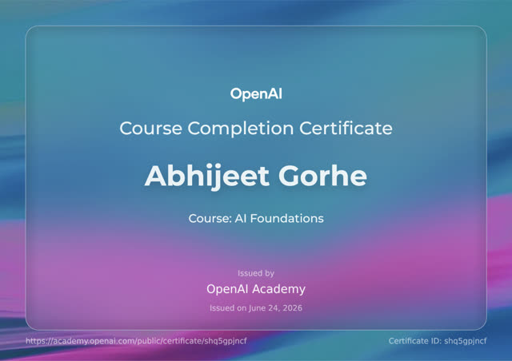
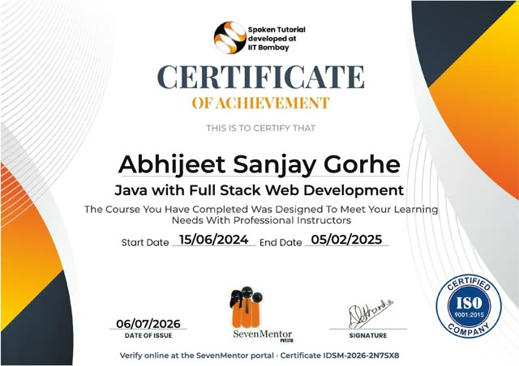

Available for projects
Documentary edits, visual storytelling, motion design and cinematic colour grading — stories that keep people watching.
Abhijeet Gorhe — documentary video editor, motion designer and colourist in Nashik & Malegaon
 Let's TalkAbhijeet GorheVideo Editor & Motion Designer
Let's TalkAbhijeet GorheVideo Editor & Motion Designer
(01) Selected edits
Work that
holds attention.
A selection of recent edits. Several are shown beside the reference they were matched against, so the craft speaks for itself.
(02) Services
Four disciplines,
one standard.
Editing services for YouTubers, creators and brands — in Nashik, Malegaon and remotely worldwide.
- 01
Documentary Editing
Research-heavy, narration-led edits — archival footage, maps, captions and pacing that keeps a 10-minute story moving.
- 02
Visual Storytelling
Turning a script or idea into shots, sound and rhythm — Reels, Shorts and YouTube edits built around one clear story.
- 03
Motion Design
Kinetic typography, animated maps, explainers and titles in After Effects that make information easy to follow.
- 04
Cinematic Editing & Colour Grading
Film-style cuts and grades — from flat footage to a consistent, cinematic look matched to your reference.
Tools
(03) About
An editor with an
engineer’s discipline.
Hi, I’m Abhijeet Rajshree Sanjay Gorhe — a Computer Science Engineer, full-stack developer and video editor from Malegaon, Nashik (Maharashtra).
I studied B.Tech in Computer Science & Engineering at Walchand College of Engineering, Sangli (2022–2026). Today I work as a Full Stack Web Developer Intern at 10xTech, building with React, TypeScript, Node.js and Docker.
For the last two years I’ve been creating for social media and growing my own YouTube channel, so I edit with retention in mind, not just style. I study strong edits frame by frame, rebuild them, then bring that precision to client work — the reference comparisons above show that process.
(04) Process
A clear, simple process.
- 01
Brief
Your goal, audience, references and deadline.
- 02
Plan
Script, storyboard or look references — we agree before I cut.
- 03
Create
Edit, grade, motion and sound, with a draft for your review.
- 04
Deliver
Final files in every format you need, plus a round of revisions.
(05) Experience
Experience & credentials.
-
Jul 2026 – PresentMumbai, India
Full Stack Web Developer Intern
10xTech ↗Production features with React.js and TypeScript, REST APIs with Node.js, Express and Sequelize, and MySQL data models — containerised with Docker and shipped through code reviews, QA and GitHub/Jira workflows.
-
Last 2 yearsOnline
Content Creator & Video Editor
YouTube · @abhijeetgorhe ↗Grew my own channel to 40.7K views and +750 subscribers in 40 days. Documentaries, Reels, Shorts, explainers and colour grading with a focus on retention.
-
Dec 2022 – Aug 2023Sangli, India
Web Designer
Rotaract Club of WCE ↗UI mockups, social media creatives, promotional assets and reusable templates for events and digital initiatives.
Certifications

AI FoundationsOpenAI Academy · Jun 2026 · Verify ↗ 0-100 Full Stack Web Development100xdevs · Harkirat Singh · Jun 2026
0-100 Full Stack Web Development100xdevs · Harkirat Singh · Jun 2026

Java with Full Stack Web DevelopmentSevenMentor · with Spoken Tutorial, IIT Bombay · Jul 2026Education
- B.Tech, Computer Science & EngineeringWalchand College of Engineering, Sangli · 2022 – 2026
- HSC · 80% & MHT-CET · 94.44 %tileLt. B.R. Patil Jr. College of Science and Arts, Malegaon · 2020 – 2022
- SSC · 94.40%Karmveer Bhausaheb Hire High School & Jr. College, Malegaon · 2020
(06) FAQ
Frequently asked.
Are you a video editor in Nashik?
Yes. I’m Abhijeet Gorhe, a video editor and motion designer from Malegaon in Nashik district, Maharashtra. I edit YouTube videos, documentaries, Reels and Shorts for creators and businesses in Nashik city, Malegaon and anywhere online.
Do you do colour grading?
Yes — from correcting flat or log footage to building a consistent cinematic look, often matched to a reference you love. See the colour grading edits above.
What software do you edit with?
Premiere Pro for the edit, After Effects for motion design, Lightroom and Photoshop for stills and looks, Illustrator and Adobe XD for graphics — with AI tools like ChatGPT, Claude and Google AI to speed up research and scripting.
Can you match the style of a video I like?
Yes — send me the reference. Most of the edits above sit side by side with the reference I was matching, so you can judge the result yourself.
Can you work remotely?
Yes. I work in person around Nashik and Malegaon and remotely with clients across India and worldwide.